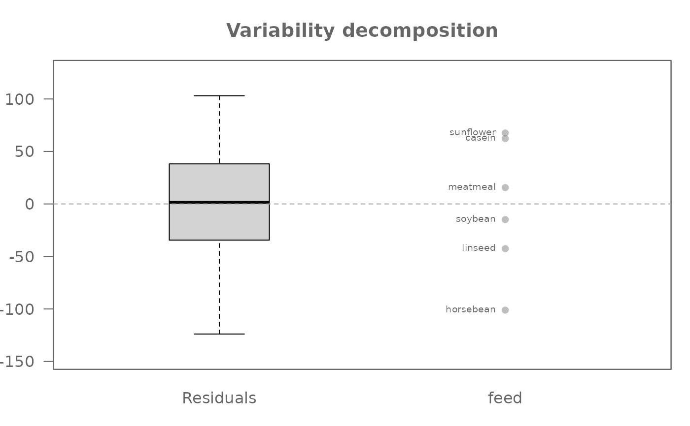
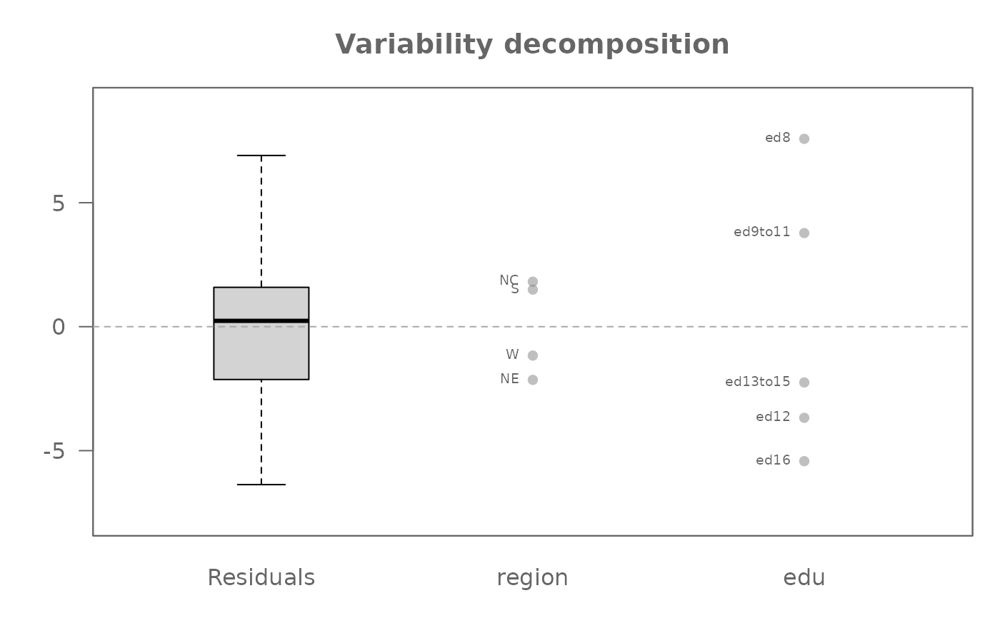
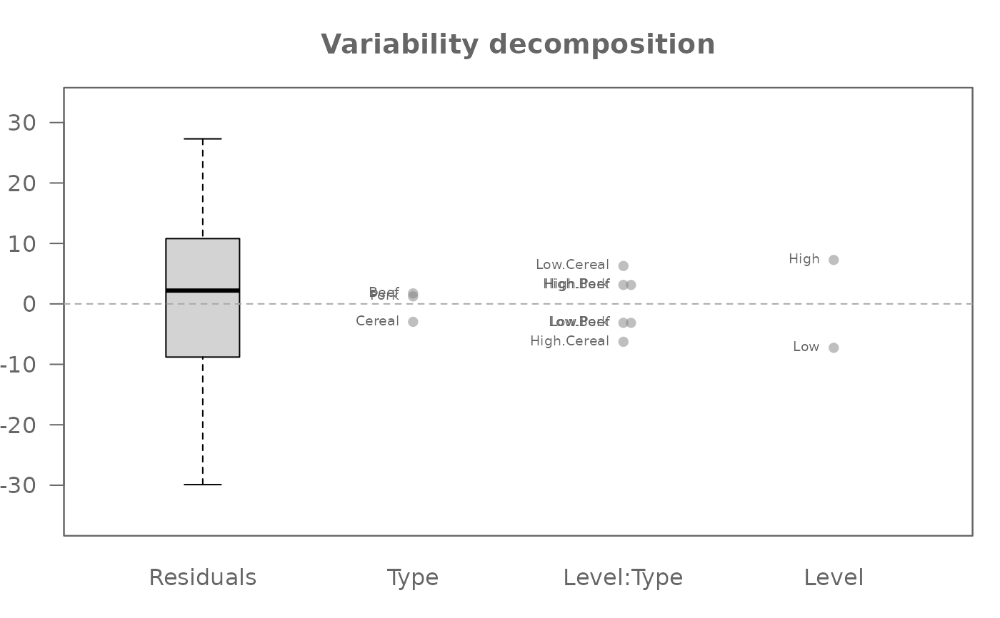
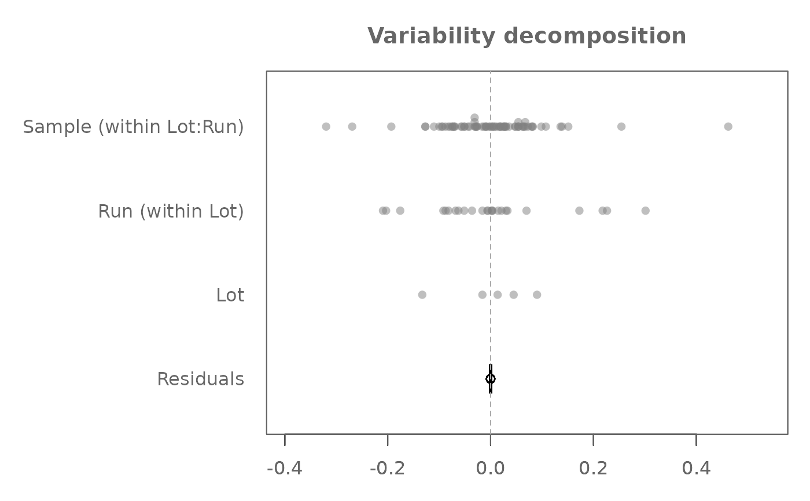
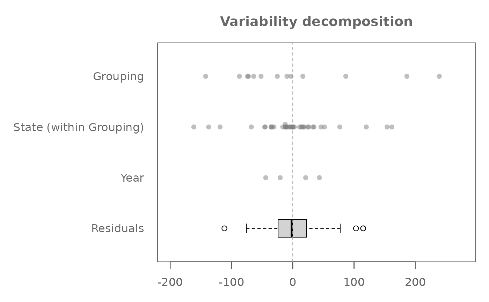
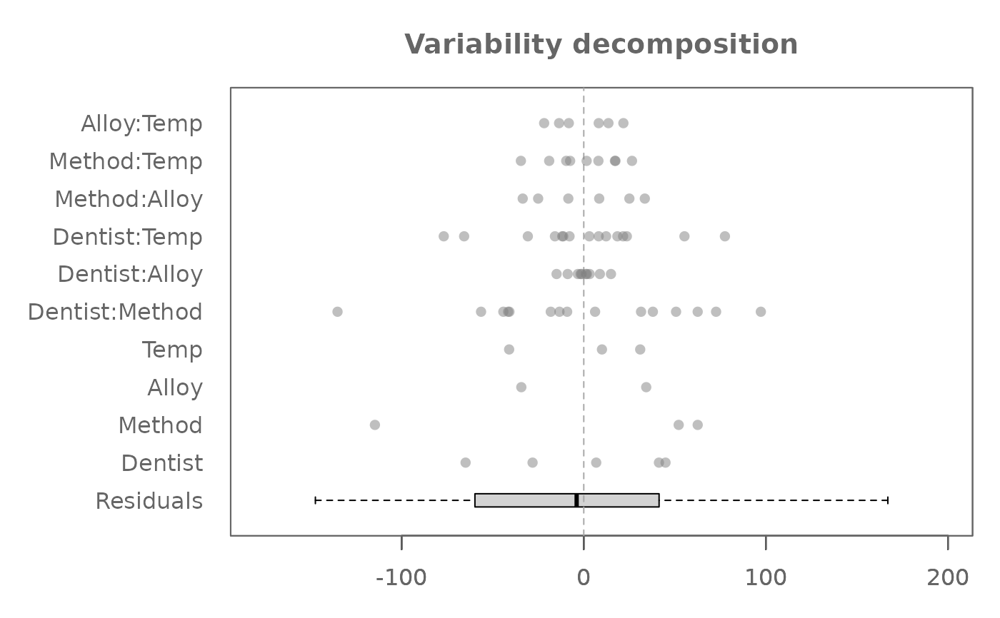
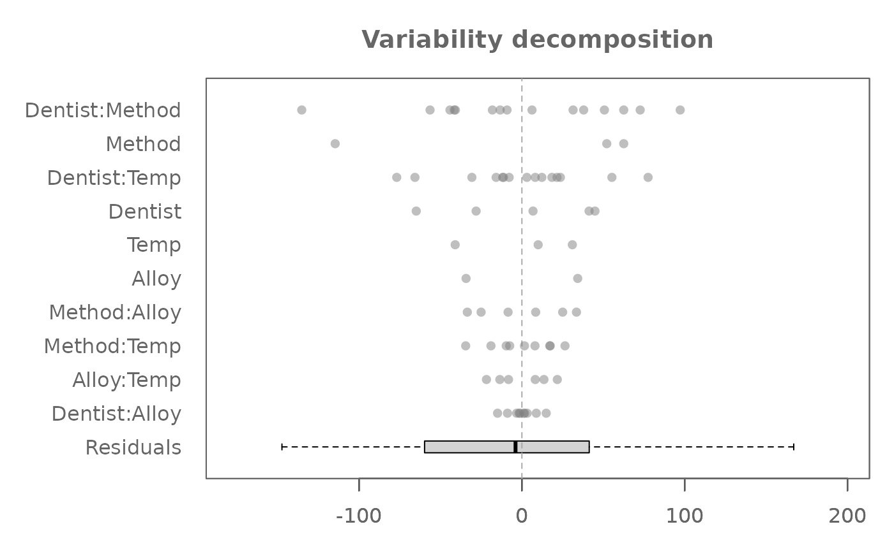
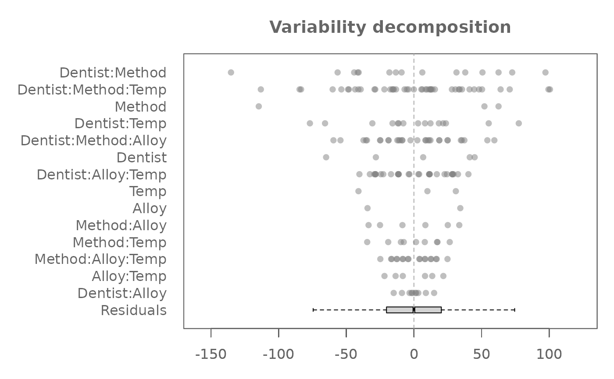

Performs an exploratory decomposition of a numeric response variable into additive components (global mean, main effects, interaction effects, and residuals) using a sequential mean sweeping algorithm. It supports both balanced and unbalanced designs, and can account for nested factor structures.
Usage
eda_mean_sweep(
data,
...,
max_order = 1,
nesting = NULL,
p = 1,
tukey = FALSE,
base = exp(1)
)Arguments
- data
A data frame containing the response and factor variables.
- ...
Unquoted variable names: The first variable must be the numeric response, followed by one or more factor variables.
- max_order
An integer specifying the maximum order of interaction effects to include. Main effects are always computed if factors are provided.
max_order = 1(default) Only main effects are calculated and included in the decomposition.
max_order = 2Main effects and all two-way interactions among the specified factors are included.
max_order = kMain effects and all interaction terms up to order
kare included.
- nesting
A list of character vectors specifying nested relationships. Each element should be a pair like
c("Parent", "Child")indicating thatChildis nested withinParent. If provided, the function will automatically reorder the sweeping sequence to ensure that parent factors are swept before their nested children.- p
Numeric. A power transformation to apply to the response variable before decomposition.
- tukey
Logical. If
TRUE, Tukey's transformation is applied. IfFALSE, a Box-Cox style transformation is used.- base
Numeric. The base for the logarithm if a logarithmic transformation (
p=0) is applied. Defaults toexp(1)(natural logarithm).
Value
A list of class "eda_mean_sweep" with the following
components:
- global
The common or global mean
- response
The name of the response variable used in the analysis.
- effects
A named list of main and interaction effects. Each element is a named vector of centered effects, representing the deviations from the adjusted mean attributable to that factor or interaction.
- residuals
A numeric vector of residuals after the global mean and all specified effects have been "swept out" (subtracted) from the response variable.
- long
The original data frame with an added
residualscolumn, which can be useful for further exploratory plotting.
Details
This function implements the value-splitting and sweeping procedure central to Exploratory Data Analysis (EDA) of Analysis of Variance (ANOVA). It systematically decomposes the response variable into additive overlays, which when recombined, recover the original data.
The decomposition process is sequential: the global mean is first removed,
then main effects are calculated and subtracted, followed by interaction
effects up to max_order. Each effect is
calculated as the mean deviation from the previously swept y
for its respective levels, and then subtracted, leaving the remaining y
for subsequent effects or as residuals.
Nested factors are specifically handled by computing their effects
within each level of their parent factor ensuring appropriate variance
attribution.
Unbalanced designs are supported by calculating group wise means
allowing for a robust decomposition even when cell counts are unequal.
Important consideration for factor order: The order in which factors are
specified can significantly affect the decomposition, particularly when factors
are correlated or nested. Factors listed earlier in the arguments are "swept"
first and may absorb variation that might otherwise be attributed to factors listed
later in the arguments. To manage this, the nesting argument provides a
structured way to enforce a logical sweeping sequence, ensuring parent factors
are accounted for before their nested children.
References
Hoaglin, D. C., Mosteller, F., & Tukey, J. W. (1991). Fundamentals of Exploratory Analysis of Variance. Wiley.
See also
eda_anova_table for computing the ANOVA table (e.g., Sums of Squares,
Mean Squares, F-statistics) from the output of this function.
plot.eda_mean_sweep for visualizing the decomposed effects and residuals.
Examples
# A one-way analysis of chickwts. "weight" is the response and "feed" is
# the factor. First column passed to the function must be the response variable
# ("weight" in this example)
M0 <- eda_mean_sweep(chickwts, weight, feed)
# Global (overall) mean weight
M0$global
#> [1] 261.3099
# Effect level values
M0$effects
#> $feed
#> casein horsebean linseed meatmeal soybean sunflower
#> 62.27347 -101.10986 -42.55986 15.59923 -14.88129 67.60681
#>
# Compare residuals' spread to those of the effects
plot(M0, label = TRUE)

# A two-way analysis without replicates (i.e. one value per cell)
M0 <- eda_mean_sweep(inf_mort, perc, region, edu)
plot(M0, label = TRUE)

# A two -way analysis with replicates (i.e. multiple values per cell)
# Include 2-way interaction effects
M0 <- eda_mean_sweep(feav5_12, Weight, Level, Type, max_order = 2)
plot(M0, label = TRUE)

# A three-way analysis with nested factors. There are two embedded nests:
# Sample embedded under Run and Run embedded under Lot.
# Response variable is decomposed across ALL factors leaving 0 residuals
M0 <- eda_mean_sweep(feav5_14, Absorption, Lot, Run, Sample,
nesting = list(c("Lot", "Run"), c("Run","Sample")))
plot(M0, rotate = TRUE)

# A traditional ANOVA table can be generated from the eda_mean_sweep object
eda_anova_table(M0)
#> Effect SS df MS F p
#> 1 Common 8.176608e+01 1 8.176608e+01 NA NA
#> 2 Lot 4.234740e-01 4 1.058685e-01 6.760589e+31 0
#> 3 Run (within Lot) 1.134349e+00 24 4.726456e-02 3.018237e+31 0
#> 4 Sample (within Lot:Run) 7.819953e-01 1 7.819953e-01 4.993694e+32 0
#> 5 Residual 7.046845e-32 45 1.565966e-33 NA NA
# A three-way analysis with one nested factor (State within Grouping)
# If there is just one nesting object, the nesting argument can be passed
# a c() object without the need of embedding it in a list() object
M0 <- eda_mean_sweep(feav1_5, votes, State, Year, Grouping,
nesting = c("Grouping", "State"))
plot(M0, rotate = TRUE)

# A three-way analysis with 2-way interactions
M0 <- eda_mean_sweep(feav6_8, Hard, Dentist, Method, Alloy, Temp, max_order = 2)
plot(M0, rotate = TRUE, order = FALSE) # Preserve factor order as entered in arguments

plot(M0, rotate = TRUE) # By default, factors are ordered by range

# A three-way analysis with 3-way interactions
M0 <- eda_mean_sweep(feav6_8, Hard, Dentist, Method, Alloy, Temp, max_order = 3)
plot(M0, rotate = TRUE)
